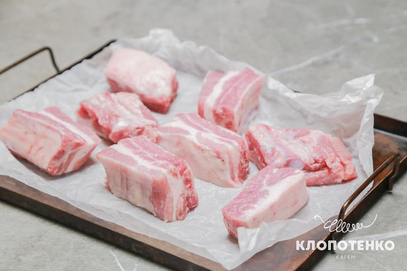

Вибір заправки
Я приготував борщ на вже готовій заправці із засмажкою від 100РОКІВ, яку виготовляють за моїм авторським рецептом. І вкотре пересвідчився: виходить так смачно, як і з домашньою, лише набагато швидше! Адже ми вже потерли та стушкували для вас буряк з овочами та спеціями. І, до речі, до складу заправки входять лише натуральні українські продукти.
Поради з приготування борщу
Я люблю більш хрумку капусту, тож додаю її наприкінці приготування борщу. Якщо вам до вподоби, коли капуста м’якша — додавайте її разом із картоплею. Спеції. У рецепті вказана лише сіль, адже в самій заправці вже є все необхідне. Втім, за бажанням, до борщу можете додати лавровий лист, кілька горошків перцю та часничок, щоб довести страву собі до смаку.
Як приготувати борщ
Інгредієнти
- 500 г свинячих реберець
- 3 л питної води
- 200 г білокачанної капусти
- 1 морквина
- 450 г картоплі (приблизно 3 шт.)
- 1 цибулина
- 1 ч. л. солі
- 300 г заправки для борщу із засмажкою 100РОКІВ
- ½ банки квасолі для борщу від 100РОКІВ
- 100 г сметани для подачі
Борщ з квасолею: покроковий рецепт
-
500 г свинячих реберець помийте, поріжте на окремі сегменти та викладіть на застелене пергаментом деко. Запікайте реберця 30-40 хв за температури 180 градусів. Почистьте 450 г картоплі та 1 морквину. Наріжте 200 г білокачанної капусти.
 -
Почистьте 450 г картоплі та морквину. Картоплю наріжте кубиками, а моркву — навпіл. Зробіть надріз на цибулині.

-
У каструлю налийте 3 л води, додайте цибулю в шкірці, надрізану навпіл та чищену моркву. Додайте також 1 ч. л. солі та варіть на невеликому вогні 20 хв.

-
Через 20 хв додайте в каструлю запечені реберця та варіть їх 30 хв.

-
Потім додайте в бульйон порізану кубиком картоплю і варіть борщ ще 15 -20 хв.

-
Видаліть з каструлі моркву з цибулею, додайте 200 г капусти та 300 г заправки для борщу.

-
Додайте також ½ банки квасолі. На цьому етапі можете довести страву собі до смаку, доповнивши перцем та сіллю, за потреби. Проварити борщ ще 5 хв, зніміть з вогню та залиште постояти 15 хв. При подачі додайте сметану. Радимо придбати підписку на наш сайт, щоб відключити рекламу та створити зручну кулінарну книгу з рецептами